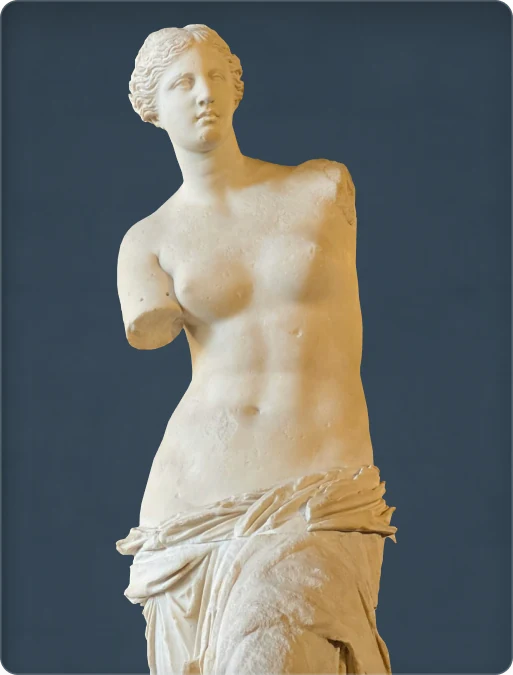

Venus de Milo

A bare torso above drapery gathered at the hips
The Venus de Milo, a Greek sculpture discovered on the island of Melos in 1820, depicts a goddess with a bare torso and drapery around her lower body. Two blocks of Parian marble meet at the hips. Usually identified as Aphrodite, she may instead represent Amphitrite. The missing arms and attributes leave her identity uncertain.
Greece, Hellenistic period · 150–125 BCE · Parian marble · Musée du Louvre, Paris · inv. Ma 399
Photo credit
Photo: Stephanie Klepacki / Unsplash
A figure in quiet motion
The face turns slightly and the shoulders slope. Lower down, one side of the torso curves inward before the hip sweeps outward again. Follow this outline from the neck to the folds around the hips. The tilt of the head, the slope of the shoulders and the curve at the waist give direction to a figure that appears still at first glance. The plain background of the photograph makes these small changes in the outline easy to follow.
How marble takes on the shape of cloth
At the hips, the drapery bunches into a thick roll. Some folds run diagonally from it, and others fall almost straight down. Light spreads across the broad surfaces of the torso. In the drapery, it catches narrow ridges and leaves the recesses in shadow. The change in relief makes skin and fabric read differently even though both are carved from Parian marble. The two blocks that form the statue meet at this same height.
The missing gesture
One arm ends close to the shoulder and the other survives a little farther down. Find the breaks in the outline, then return to the face and waist. The direction of the gaze and the pull of the cloth give some sense of the figure’s stance. The position of the hands could have clarified the gesture, directed the gaze or explained the shape of a fold. The breaks leave those relationships open to more than one reading.
Aphrodite or Amphitrite
Aphrodite remains the usual identification, and Amphitrite is another possibility. In the photograph, the statue may be familiar from its outline alone. Identifying the goddess takes different evidence, including any objects she might have held. The name Venus de Milo lets us refer to the work while that question remains open. The link to the Louvre record lets you look up the sculpture under that name and consult the museum’s account.